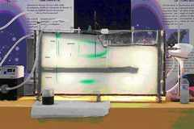
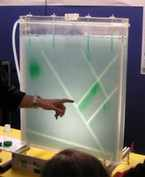

Recent activities Media, articles and books Quand les nappes montent Tout comprendre (ou presque) sur l’eau 2025–2026 · Documentary comic
Illustrated investigation by Simon Gouin and Vincent Sorel based on the RIVAGES Normands 2100 research programme · comic and outreach videos.
3 June 2025 · Ouest-France
La vérité scientifique existe-t-elle toujours ? Le cas des mégabassines
Talk for journalists, open to subscribers.
26 May 2025 · Podcast
Voyages extraordinaires dans les sciences · Radio Laser / Unidivers · interview with Jean-Louis Coatrieux.
30 April 2024 · Sciences Ouest
Sciences Ouest, no. 419, special issue “L’eau, en péril ?”.
April 2024 · La Vie
Interview on water resources, droughts, floods and climate change.
6 February 2024 · Ouest-France
Une étude sur l’évolution des nappes phréatiques de Normandie menée avec l’université de Rennes
Presentation of research on groundwater rise and coastal risks.
2024 · CNRS Éditions
Contributions: “Un ou des cycles de l’eau ?” and “Allons-nous manquer d’eau à cause (et pas que) du changement climatique ?”.
2023 · Géologues, no. 219
M. Le Mesnil, A. Gauvain, S. de Foville, F. Gresselin, F. Poirier, J.-R. de Dreuzy and L. Aquilina.
March 2022 · Le Télégramme
La Bretagne lance sa plateforme scientifique GLAZ autour des écosystèmes côtiers
Presentation of the regional observation and research platform.
October 2021 · Sciences Ouest
With Fred Jean.
Additional resources
Fondation Université de Rennes.
Public talks, webinars, debates and public expertise November 2025 · Brittany Region
L’eau dans les territoires d’activités économiques durables
Contribution to a regional working day.
18 June 2025 · Orléans
Pôle Aquanova meetings.
14 May 2025 · Penmarc’h
Évolution de la ressource en eau
Public science lecture series.
4 October 2024 · CRESEB webinar
With Nicolas Cornette and Alexandre Boisson · uptake of the seasonal forecasting tool by catchment managers.
12 March 2024 · Université Bretagne Sud, Vannes
Planète Conférences.
12 March 2024 · Bruz
Empreinte eau qualité et quantité
Pôle Valorial meetings · École des Métiers de l’Environnement.
31 January 2024 · Rennes
Impact du changement climatique sur la ressource en eau
“Connaissance et partage” conference · Carrefour des gestions locales de l’eau.
22 November 2023 · OneWater webinar
18 October 2023 · France Culture
La Science, CQFD .
16 June 2023 · Rennes area
ECODO technical meeting “Eau & Sécheresse” · ALEC du Pays de Rennes.
13 April 2023 · Ille-et-Vilaine
Perspectives des ressources en eau dans la perspective du changement climatique
General assembly of the Ille-et-Vilaine Departmental Council.
21 March 2023 · ENS Rennes
ConférENS workshop.
19–20 September 2022 · Rennes
Les sciences du logiciel au croisement des autres sciences
Panel at the conference “Sciences du logiciel : de l’idée au binaire”.
Research, territories and decision support 2019–2028 · Fondation Université de Rennes
2022– · OneWater – Eau Bien Commun
OneWater — Water footprint & Targeted Project 4
2022–2024 · Brittany Region / CNRS / BRGM
2020–2023 · CNRS / Brittany Region
Territorial water-resource management under climate and human pressures · participatory approach at the interface between natural and social sciences.
2019–2022 · Brittany Region / BRGM
Climate-change impacts on groundwater resources to 2050–2100 · project developed with drinking-water syndicates and CRESEB.
Earlier activities Media, articles and books 2018 · Le Figaro
Interview on groundwater recharge and hydrological variability.
27 June 2018 · Ouest-France
Réchauffement climatique : Larrouturou ou l’urgence d’agir
Contribution to public debate on climate change.
2013 · Textes et Documents pour la Classe
With Alain Rapaport · TDC no. 1062, “Les mathématiques de la Terre” · online version on Interstices.
2013 · Science & Vie
Contribution as a hydrogeology expert to a science communication feature.
2009 · Les Cahiers de l’Inria / La Recherche
Jocelyne Erhel and Jean-Raynald de Dreuzy · groundwater modelling, flow and contaminant dispersion.
Public talks, webinars, debates and public expertise 17 November 2020 · Rennes
Résilience des territoires
Panel discussion, Observatoire de l’environnement en Bretagne partners conference · TV Rennes.
18 September 2019 · University of Rennes
Organisation of the interdisciplinary conference · introduction with Olivier David · video recording.
25 March 2019 · Loudéac
“Changement climatique et grand cycle de l’eau” meeting · CRESEB · video and presentation available.
31 January 2019 · Rennes
La place de la modélisation dans la démarche scientifique : des modèles pour quoi faire ?
CRESEB “Science et décision publique” seminar · Carrefour des gestions locales de l’eau.
1 December 2017 · University of Rennes
Talk by Jean Jouzel and Pierre Larrouturou organised by OSUR · about 450 participants · video recording.
26 April 2014 · Saint-Brieuc
Sous-sol et qualité de l’eau en Bretagne
Public talk on the role of the subsurface in water resources and water quality.
14 January 2014 · CNRS
Structuration et rôle de la fracturation dans les transferts de fluides et d’éléments
Scientific meeting on shale oil and gas · presentation slides.
10 January 2013 · OPECST
CNRS / ANCRE hearing by the French Parliamentary Office for the Evaluation of Scientific and Technological Choices on alternatives to hydraulic fracturing.
11 October 2013 · Dreux
Présentation des enjeux hydrogéologiques associés à l’exploitation des hydrocarbures non conventionnels
Public talk.
25 November 2011 · Grenoble
Shale-gas debate organised by Envirhônalp · video.
3 February 2011 · Inria
Le milieu souterrain : poubelle hermétique ou réservoir pérenne ?
Colloquium “Le modèle et l’algorithme”.
18 March 2010 · IUT Saint-Brieuc
Les ressources en eau du XXe siècle seront-elles suffisantes pour le XXIe siècle ?
Parlons techn’eau lecture series.
2008–2009 · Lycée Jeanne-d’Arc
Quelles ressources en eau pour le XXIe siècle ? · L’eau, « à la vie à la mort »
Talks for secondary-school and BTS students.
Science outreach and educational resources Teaching model · hydrogeology
Comprendre le fonctionnement des nappes phréatiques
J.-R. de Dreuzy, J. de Brémond d’Ars, J.-P. Caudal · analogue model of groundwater flow.
2008–2009 · Teaching model · flow and transport
D. Roubinet, J. Bouquain, J.-R. de Dreuzy · porous-fractured aquifer, infiltration, groundwater flow and contaminant transport · used at Fête de la science, P’tits Débrouillards and in secondary-school outreach.

Teaching model: visualisation of groundwater flow and tracer propagation. 
Fractured-medium model used to illustrate transfers through complex subsurface media. 2003–2008 · Public science events
Fête de la science and Festival des explorateurs
Fête de la science, Rennes: 2003, 2004 and 2008 · Palais de la découverte, Paris: 2005 · Festival des explorateurs, Vannes: 2007.
2004–2009 · ENVAM online learning
Distance-learning modules in environment and planning
Hydrogéologie fondamentale (2004) · Traitement de l’information spatialisée en sciences de l’environnement (2007) · Modélisation hydrogéologique des milieux souterrains (2009).
The models were designed as demonstration and discussion tools to make otherwise hidden subsurface flow pathways directly visible.
Research, territories and decision support 2018–2020 · Brittany Region / Loire-Bretagne Water Agency
Catchment response times to changes in agricultural practices and transfer of knowledge to territorial stakeholders.
2014–2019 · AFB / Brittany Region
AquiFR-BZH
Regional modelling of basement aquifers and surface–groundwater exchanges, linked to the national AquiFR platform.
2007–2010 · ANR
Vulnerability to anthropogenic global change · groundwater quantity and quality · field sites in Brittany and India.